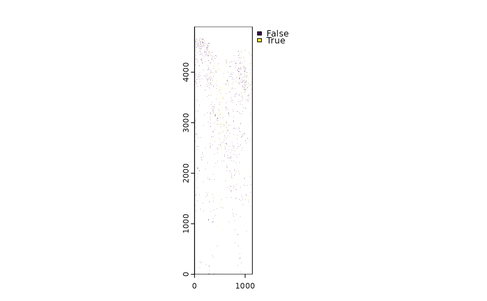

This function calculates the proportion of root pixels that grow in the direction of steepest local depth descent — a metric for evaluating how efficiently roots explore the vertical soil profile.
Usage
deep_drive(
DepthMap,
RootMap = NULL,
AngleMap = NULL,
select.layerRM = NULL,
select.layerDM = NULL,
select.layerAM = NULL,
return = c("value", "all")
)Arguments
- DepthMap
A SpatRast object representing local depth (e.g., distance from surface or tube wall).
- RootMap
Optional. A binary SpatRast indicating root presence. Used to infer `AngleMap` if not provided.
- AngleMap
Optional. A SpatRast of root angles in D8 format (0, 45, ..., 315). If missing, inferred from `RootMap` and `DepthMap`.
- select.layerRM
Integer. Which layer to use from `RootMap` if it has multiple bands. Default is `2`.
- select.layerDM
Integer. Which layer to use from `DepthMap`. Default is `NULL`.
- select.layerAM
Integer. Which layer to use from `AngleMap`. Default is `NULL`.
- return
Character. `"value"` (default) returns a single numeric proportion. `"all"` returns a list with spatial outputs for visualization.
Value
- If `return = "value"`: A numeric value between 0 and 1. - `1` means all root pixels align with the local steepest downward direction. - `0` means none of the root pixels align with local depth gradients.
- If `return = "all"`: A named list with: - `deep_drive`: numeric proportion (same as above) - `angle_map`: the root direction map used (SpatRast) - `optimal_angle_map`: the steepest downward direction from `DepthMap` (SpatRast) - `aligned_roots`: binary SpatRast showing root pixels aligned with the steepest local depth descent
Details
It uses a depth raster (`DepthMap`) and a root direction raster (`AngleMap`) or estimates one from a binary root presence map (`RootMap`). Directions are compared using a D8 neighborhood scheme.
Examples
data(skl_Oulanka2023_Session01_T067)
im <- ceiling(terra::rast(skl_Oulanka2023_Session01_T067) / 255)
DepthMap <- terra::t(create_depthmap(im, center.offset = 0, tube.thicc = 3.5))
# Just the deep drive score
deep_drive(DepthMap = DepthMap, RootMap = im, select.layerRM = 2)
#> [1] 0.2440492
# Get spatial outputs too
res <- deep_drive(DepthMap = DepthMap, RootMap = im, select.layerRM = 2, return = "all")
terra::plot(res$aligned_roots)
